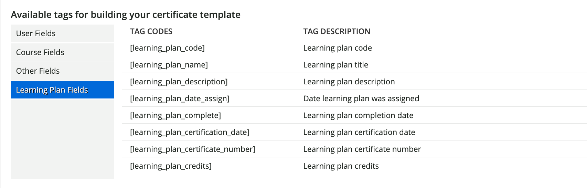
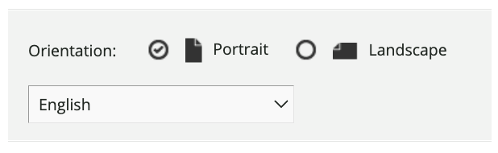
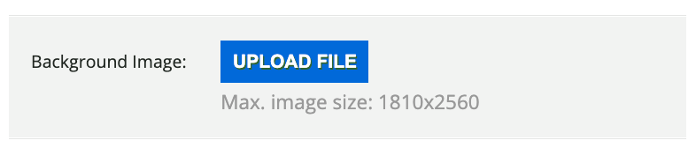
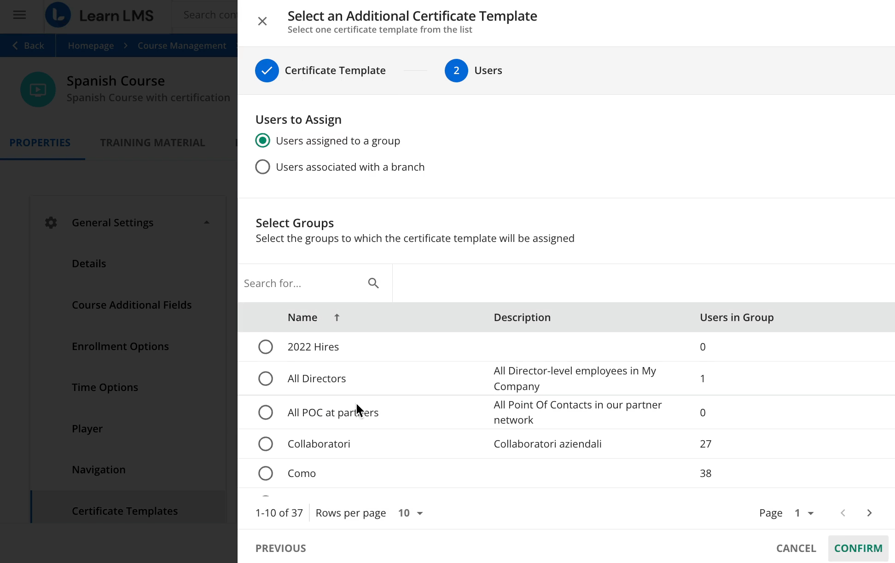

Сертификация
Сертификаты в Docebo
Инструкция по созданию шаблонов сертификатов, настройке динамических тегов, привязке сертификатов к курсам и learning plans, выдаче, скачиванию и обновлению выданных сертификатов.
Определите, что именно нужно выдать
Сертификаты и certifications в Docebo похожи по названию, но решают разные задачи.
Certificate
Подтверждает завершение конкретного курса или learning plan. Обычно не требует отдельного процесса продления. В этом гайде описана именно настройка certificates.
Certification
Используется для программ с валидностью, сроком истечения и retraining. Для этого нужен отдельный процесс через Certifications & retraining app.
Создайте certificate template
Шаблон задает внешний вид сертификата и данные, которые будут подставляться при выдаче.
- Откройте Navigation menu → Content and delivery → Certificates.
- Нажмите New certificate.
- Заполните code, name и description.
- Нажмите Confirm.
- Откройте Certificate template icon в строке шаблона, чтобы настроить макет.
Настройте макет, язык и динамические теги
В редакторе сертификата добавьте постоянный текст, изображения и теги, которые Docebo заполнит автоматически.
Статический текст и изображения
Добавьте заголовок, текст подтверждения, подписи и логотип. Изображения нужно загружать в шаблон; внешние URL для изображений не поддерживаются.
Динамические теги
Используйте теги вроде [firstname], [lastname],
[course_name], [date_complete] и [course_certificate_number].
Вставляйте их как plain text, чтобы не занести лишнее форматирование.
Ориентация и язык
Выберите portrait или landscape и язык шаблона. Язык влияет на формат дат, которые выводятся через date-теги.
Фон
Если нужен фон, загрузите его до настройки HTML-текста. Рекомендуемые размеры: portrait 1810×2560 px, landscape 2560×1810 px. Максимум: 10 MB.



Привяжите сертификат к курсу
После привязки шаблона сертификат будет выдаваться пользователям, которые завершили курс.
Default certificate template
- Откройте Navigation menu → Content and delivery → Courses.
- Найдите курс и откройте его.
- Перейдите в Properties → Certificate templates.
- В поле Default certificate template нажмите плюс.
- Выберите шаблон и нажмите Select.
- Нажмите Save changes.
Additional certificate templates
Дополнительные шаблоны нужны, если разные branches или groups должны получать разные макеты. Можно назначить до 50 дополнительных шаблонов на курс.
- Сначала должен быть выбран default template.
- Порядок шаблонов важен: Docebo использует первый подходящий шаблон.
- Если пользователь входит в несколько groups или branches, порядок решает, какой макет будет выдан.
- Можно разрешить получение до трех сертификатов с разными макетами после завершения курса.

Привяжите сертификат к learning plan
Learning plan может иметь только один certificate template.
- Откройте Navigation menu → Content and delivery → Learning plans.
- Найдите learning plan и выберите Edit.
- Во вкладке Properties найдите Certificate template.
- Нажмите плюс, выберите шаблон и подтвердите выбор.
- Сохраните изменения.
Сертификат learning plan выдается только после завершения всех курсов внутри learning plan. Это правило действует даже если пользователь зачислен не на все курсы плана.
Выдайте или скачайте сертификаты
После завершения связанного курса или learning plan сертификат появляется у learner автоматически.
Как learner скачивает сертификат
После завершения обучения learner может скачать PDF из completion pop-up, с кнопки Download certificate в course или learning plan, а также из My activities или My transcript, если эти страницы доступны в меню.
Как admin скачивает выданный сертификат
Откройте Certificates, найдите нужный template и нажмите Issued certificates. Выберите course или learning plan, затем скачайте PDF в строке пользователя.
Ручная выдача
В окне Issued certificates выберите пользователей, откройте On selected и выберите Issue certificate. Действие применяется сразу после выбора.
Archived enrollments
Для archived course enrollments сертификат скачивается через Course → Enrollments → Enrollment type → Archived enrollments → Details → Download certificate.
Обновите, удалите или перевыпустите сертификаты
Изменение шаблона не меняет уже выданные сертификаты автоматически.
Как применить новый шаблон к уже выданному сертификату
- Обновите certificate template и сохраните изменения.
- Откройте Issued certificates для этого шаблона.
- Выберите нужного пользователя.
- Удалите ранее выданный сертификат через Delete all the issued certificates.
- Снова выберите пользователя и выполните Issue certificate.
- Скачайте PDF и проверьте результат.
Проверьте перед запуском
Минимальный чеклист, чтобы сертификаты не пришлось массово перевыпускать.
- Шаблон открывается в preview и корректно выглядит в PDF.
- Фон загружен подходящего размера и не перекрывает текст.
- Все dynamic tags вставлены как plain text и корректно подставляют данные.
- Язык шаблона выбран правильно, особенно если используются date-теги.
- Курс или learning plan имеет нужный certificate template.
- Для курса с несколькими шаблонами проверен порядок branches/groups.
- На тестовом пользователе проверено завершение курса и скачивание сертификата.
- Если сертификат содержит scores, проверьте, как курс рассчитывает итоговый score.